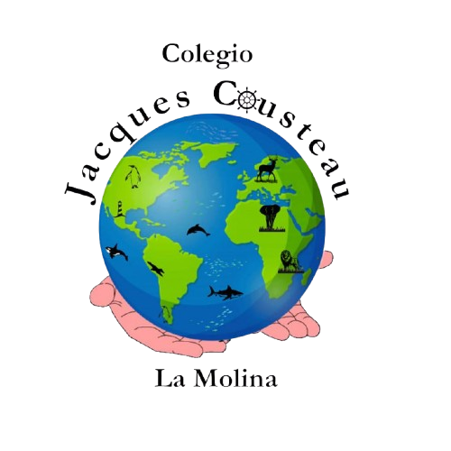
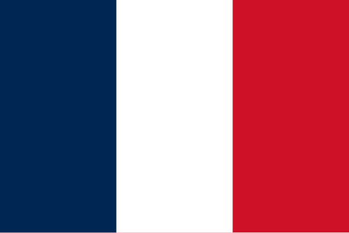
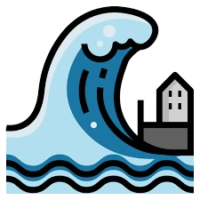
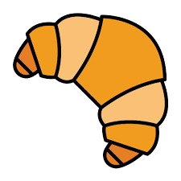

<!DOCTYPE html>
<html lang="en"></html>
<head>
  <meta charset="UTF-8" />
  <meta name="viewport" content="width=device-width, initial-scale=1.0" />
  <title>Habla bonito, en español</title>
  <link rel="stylesheet" href="estilos.css" />
</head>
<body>
  <header class="header">
    <figure class="logo">
      
    </figure>
    <h1>Habla bonito, en español</h1>
    <p>
      En esta página conocerás algunas palabras extranjeras que usamos en el
      Perú. Descubre su origen, su significado y cómo podemos reemplazarlas por
      términos propios de nuestra lengua materna el español.
    </p>
  </header>

  <main>
    <section>
        <article>
            <header>
                <h2>Software</h2>
                
            </header>
            <p>Inglés - Estados Unidos</p>
            <p>Origen: proviene del inglés soft (suave) + ware (mercancía).</p>
            <p>Siginificado: conjunto de programas que permiten funcionar a una computadora.</p>
            <p>Equivalente en español: programa informático.</p>
            
        </article>

        <article>
            <header>
                <h2>Déjà vu</h2>
                
            </header>
            <p>Francés - Francia</p>
            <p>Origen: proviene del francés, significa “ya visto”.</p>
            <p>Siginificado: sensación de haber vivido antes una situación presente.</p>
            <p>Equivalente en español: sensación repetida o vivida.</p>
            <figure>
                
            </figure>
        </article>

        <article>
            <header>
                <h2>Fiordo</h2>
                
            </header>
            <p>Noruego - Noruega</p>
            <p>Origen: proviene del noruego fjord, que a su vez viene del nórdico antiguo fjǫrðr.</p>
            <p>Siginificado: entrada estrecha del mar que se forma entre montañas altas.</p>
            <p>Equivalente en español: bahía estrecha o valle marino.</p>
            
        </article>
        
        <article>
            <header>
                <h2>Marketing</h2>
                
            </header>
            <p>Inglés - Reino Unido</p>
            <p>Origen: proviene del verbo inglés to market (comercializar).</p>
            <p>Siginificado: conjunto de técnicas para vender productos.</p>
            <p>Equivalente en español: mercadotecnia.</p>
            
        </article>

        <article>
            <header>
                <h2>Gurú</h2>
                
            </header>
            <p>Sánscrito - India</p>
            <p>Origen: proviene del sánscrito (lengua antigua de la India) 'guru'.</p>
            <p>Siginificado: maestro espiritual o persona sabia que guía a otros.</p>
            <p>Equivalente en español: maestro o guía.</p>
            
        </article>

        <article>
            <header>
                <h2>Tsunami</h2>
                
            </header>
            <p>Japonés Japón</p>
            <p>Origen: proviene del del japonés tsu (puerto) y nami (ola), literalmente “ola del puerto”.</p>
            <p>Siginificado: ola de gran tamaño producida por un movimiento sísmico o volcánico bajo el mar.</p>
            <p>Equivalente en español: maremoto.</p>
            <figure>
                
            </figure>
        </article>

        <article>
            <header>
                <h2>Hobby</h2>
                
            </header>
            <p>Inglés - Reino Unido</p>
            <p>Origen: proviene del inglés antiguo 'hobyn', que significaba “pasatiempo favorito”.</p>
            <p>Siginificado: actividad que se hace por gusto o diversión.</p>
            <p>Equivalente en español: afición.</p>
            
        </article>

        <article>
            <header>
                <h2>Croissant</h2>
                
            </header>
            <p>Francés - Francia</p>
            <p>Origen: proviene del francés croissant, que significa “creciente” (por su forma de luna).</p>
            <p>Siginificado: panecillo en forma de media luna, típico de Francia.</p>
            <p>Equivalente en español: medialuna.</p>
            
        </article>

        <article>
            <header>
                <h2>Internet</h2>
                
            </header>
            <p>Inglés - Estados Unidos</p>
            <p>Origen: proviene de la contracción de interconnected networks (redes interconectadas).</p>
            <p>Siginificado: red mundial que conecta computadoras y usuarios.</p>
            <p>Equivalente en español: red mundial de información.</p>
            
        </article>

        <article>
            <header>
                <h2>Kindergarten</h2>
                
            </header>
            <p>Alemán - Alemania</p>
            <p>Origen: proviene del alemán kinder (niños) + garten (jardín).</p>
            <p>Siginificado: centro educativo para niños pequeños.</p>
            <p>Equivalente en español: jardín de niños o nido.</p>
            
        </article>
    </section>

    <aside>
        <h3>Sabías que...</h3>
        <ul>
            <li>El inglés es la lengua que más extranjerismos aporta al español.</li>
            <li>Algunos extranjerismos se adaptan, como “fútbol” de *football*.</li>
            <li>La RAE solo acepta los extranjerismos que no tienen equivalente exacto.</li>
        </ul>
    </aside>
  </main>

  <footer style="text-align:center; padding:20px; color:#777; margin-top:20px;">
    <p>© 2025 - “Habla bonito, en español”</p>
    <p>Hecho por Gianfranco Monge y Adriano Rodríguez</p>
  </footer>
</body>
</html>